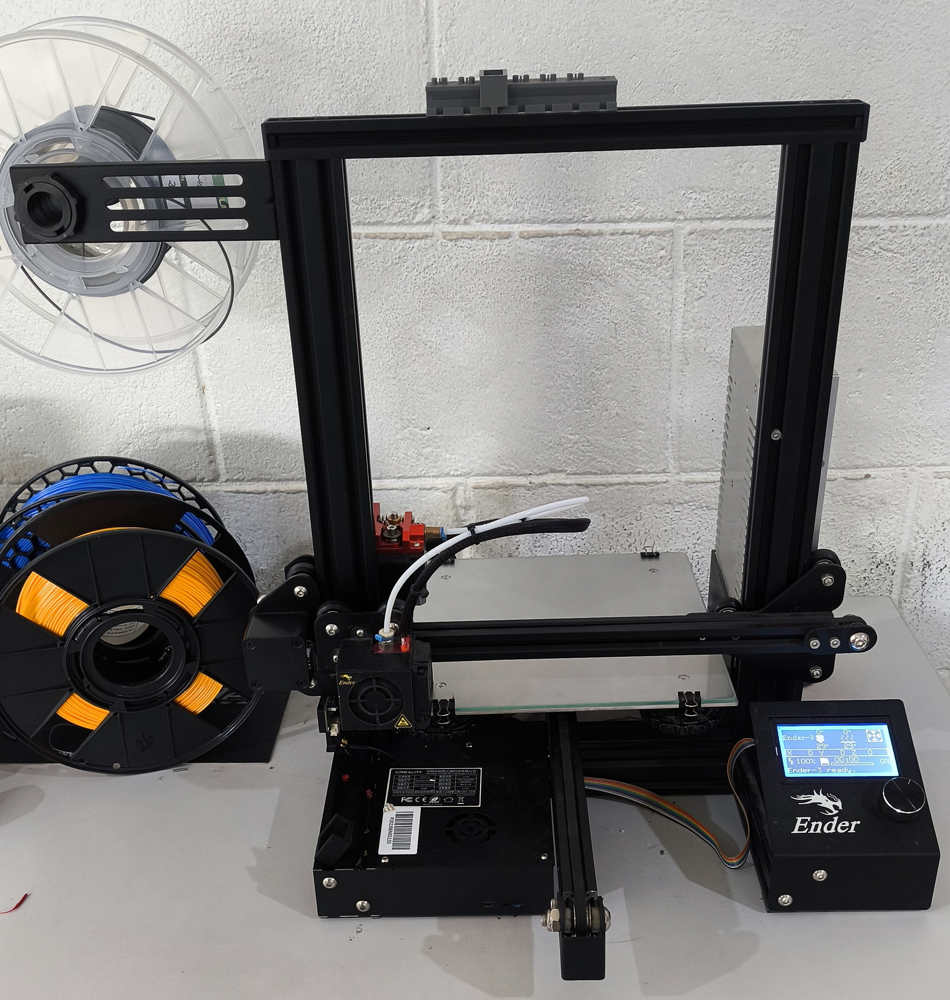
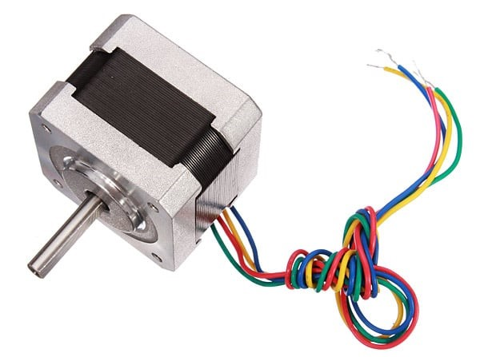
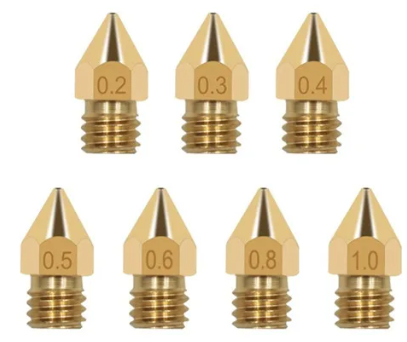
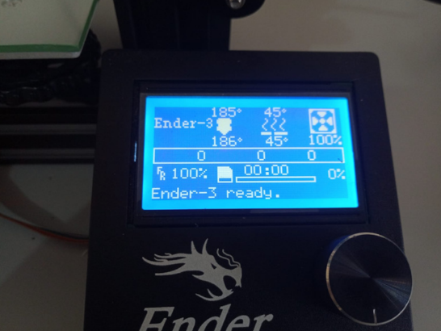
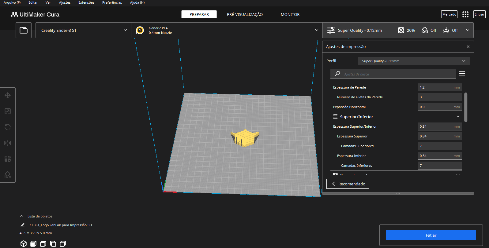
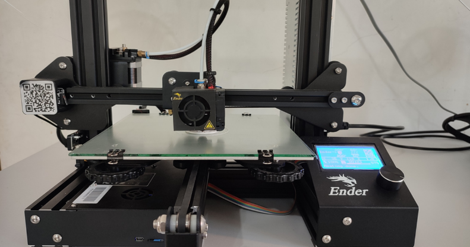

Chapter 2 PROCESSO DE IMPRESSÃO 3D
As primeiras máquinas que foram apresentadas foram as impressoras 3D, especificamente os modelos Creality Ender 3 disponíveis no laboratório. As impressoras 3D são máquinas CNC que fabricam objetos tridimensionais através do método aditivo, ou seja, constroem o objeto adicionando material camada por camada. Para isso, é necessário ter o arquivo digital do objeto desejado no formato G-code, que é a linguagem de máquina para várias CNCs, incluindo esses modelos de impressoras.

2.1 Filamentos
Na fabricação de objetos através do processo de impressão 3D, são utilizados alguns tipos de plásticos chamados filamentos. Existem diversos tipos de filamentos, sendo os mais utilizados o PLA, ABS, PETG, TPU e PET.
PLA: O mais utilizado no FABLAB, é popular e fácil de trabalhar. Feito a partir de fontes renováveis, o PLA é um material de fácil impressão, ideal para impressoras abertas ou fechadas, com ou sem mesa aquecida, e não emite gases tóxicos.
ABS: Derivado do petróleo, é bastante utilizado na indústria. É resistente a altas temperaturas e impactos, com visual opaco. Recomenda-se usar em impressoras fechadas, pois pode liberar gases prejudiciais à saúde.
PETG: Um material mais resistente que o PLA, também não emite gases tóxicos e pode ser usado em impressoras abertas ou fechadas.
TPU: Ideal para objetos flexíveis e resistentes ao impacto, semelhante a borracha.
PET: Feito de garrafas PET, oferece o benefício da reciclagem e é economicamente viável. No FABLAB, há uma extrusora de garrafa PET e uma impressora separada exclusivamente para este filamento, que é bastante resistente a impactos, umidade e temperatura.

2.2 Funcionamento da Impressora 3D
Os modelos de impressoras 3D no FABLAB funcionam com base em quatro motores de passo: três responsáveis pelos eixos X, Y e Z, e um para puxar o filamento.

Eixo X: Movimenta da esquerda para a direita através de um sistema de correia, onde está acoplada a extrusora, que contém o hotend, sensores de temperatura, cooler de refrigeração e o bico da impressora. O hotend aquece o filamento à temperatura ideal, tornando-o maleável para a modelagem do objeto.
O diâmetro do bico da impressora está diretamente ligado com a qualidade e com o tempo da impressão; quanto menor o bico maior será a qualidade da peça, mas o processo de impressão é mais demorado, pois a quantidade de material depositado por vez será menor. Pelo o outro lado, quando maior bico, menor a qualidade e mais rápido a impressão. Sendo que os principais bicos utilizados no laboratório são com os diâmetros de 0,2 mm; 0,4 mm; 0,5 mm e 0,8 mm.

Eixo Y: Movimenta a mesa da impressora, que na mesa contém uma resistência para aquecimento, melhorando a fixação do objeto durante a impressão.
Eixo Z: O Motor do eixo Z é acoplado a um fuso, que é responsável pelo movimento para cima e para baixo da impressora, mas durante o processo de impressão, o eixo Z só se movimenta apenas para cima, evitando que bata na peça, começando da origem do eixo e vai subindo camada pro camada.
Para máquina ter a referência de posicionamento, cuja é suma importância, é utilizado sensores de fim de curso mecânicos, de modo que eles representam as origens de cada eixo. A interface desse tipo de impressora é feita através de um botão rotativo e um display, de modo que controla a máquina.

O arquivo digital pode ser passado de duas maneiras, sendo uma através de cartão de memória e posteriormente o processo é iniciado através da interface da impressora ou controlada diretamente pelo computador via cabo.
2.3 Modelagem 3D
A modelagem 3D é basicamente transformar o desenho de um objeto em uma representação digital tridimensional. No FABLAB, os softwares CAD (Computer Aided Design) mais usados para modelagens 3D são o Fusion 360 e o SolidWorks, que são bem parecidos na forma de usar. Geralmente, a modelagem começa com o desenvolvimento do desenho em 2D e depois se faz a extrusão do objeto para transformá-lo em 3D. Em seguida, são feitos os ajustes necessários na peça.
A dificuldade do processo de modelagem 3D depende diretamente da complexidade da peça a ser desenvolvida. No geral, esses dois softwares são bem intuitivos e têm uma capacidade de desenvolvimento muito grande, permitindo criar desde peças simples até as mais complexas.
2.4 Fatiamento
Depois de modelar um objeto em 3D, para imprimi-lo é necessário fazer o fatiamento. Isso significa pegar a geometria do modelo 3D e transformá-la em instruções que a máquina CNC entende, ou seja, o arquivo G-code. O primeiro passo é exportar o arquivo, feito no software de modelagem 3D, para o formato STL (Standard Tessellation Language). Em seguida, utilizamos outro software para fazer o fatiamento, no caso o UltiMaker Cura. Para usar o Cura corretamente, é importante adicionar o modelo da impressora que será utilizado, pois isso garante que os parâmetros, como área de trabalho, temperatura e velocidade máxima, estejam corretos.
Depois, configuramos o diâmetro do bico da impressora e o tipo de filamento a ser usado. A seguir, ajustamos os parâmetros da impressão. Primeiro, definimos a qualidade da resolução da peça, que basicamente é a altura de cada camada; quanto mais fina a camada, melhor a qualidade, mas o tempo de impressão será maior. Também ajustamos a espessura das paredes, da base e do topo da peça.
O próximo passo é escolher o tipo de preenchimento e a densidade dele, que é dada em porcentagem: 0% significa uma peça oca e 100% uma peça maciça. Depois, ajustamos a temperatura do bico e da mesa da impressora, que varia conforme o tipo de filamento, e a velocidade da impressão. Um parâmetro importante é a existência de suporte, que depende da forma do objeto e de como ele está posicionado na mesa; o suporte é necessário em peça onde o percurso do bico iria depositar material no ar.
Após configurar tudo, basta apertar o botão para fazer o fatiamento, que gera o arquivo G-code. Esse arquivo pode ser passado para a impressora via cartão de memória ou diretamente pelo computador.

Como membro do FABLAB e monitor da disciplina, ajudei os demais alunos a fazerem suas impressões, utilizando as máquinas corretamente e fazendo o fatiamento adequado para cada impressão. Para agilizar o processo, foi recomendado eles utilizarem o site Thingiverse, onde há muitos arquivos prontos de objetos 3D disponíveis para download no formato STL. Também é essencial nivelar a mesa da impressora para garantir uma boa qualidade na impressão, usando uma folha de papel para ajustar a distância entre a mesa e o bico, quando o eixo Z está na origem. O nivelamento é feito através de quatro parafusos localizados nos cantos da mesa.
